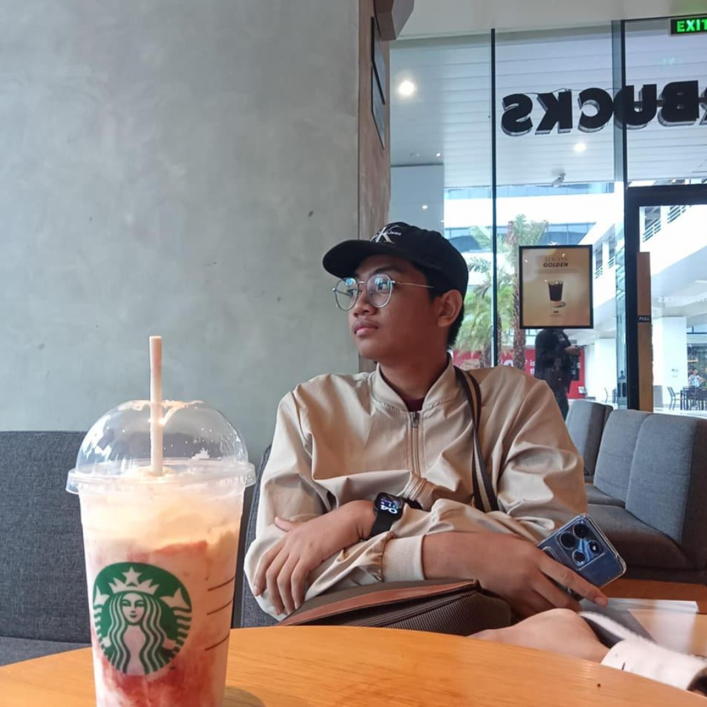
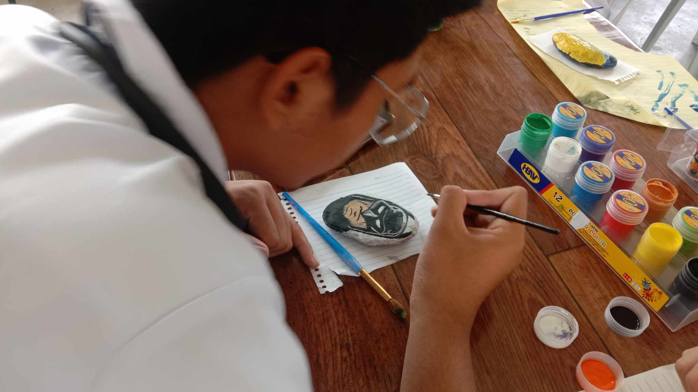
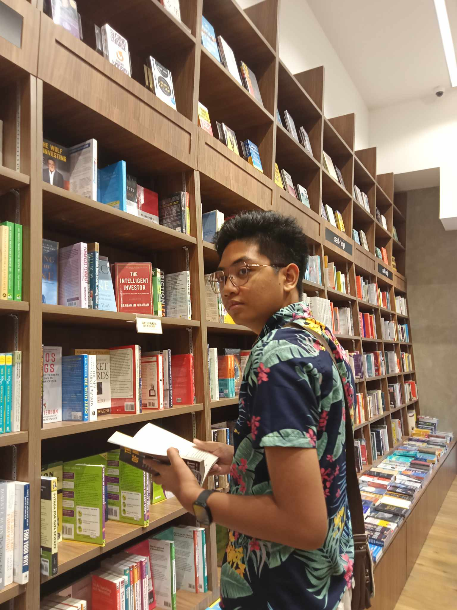
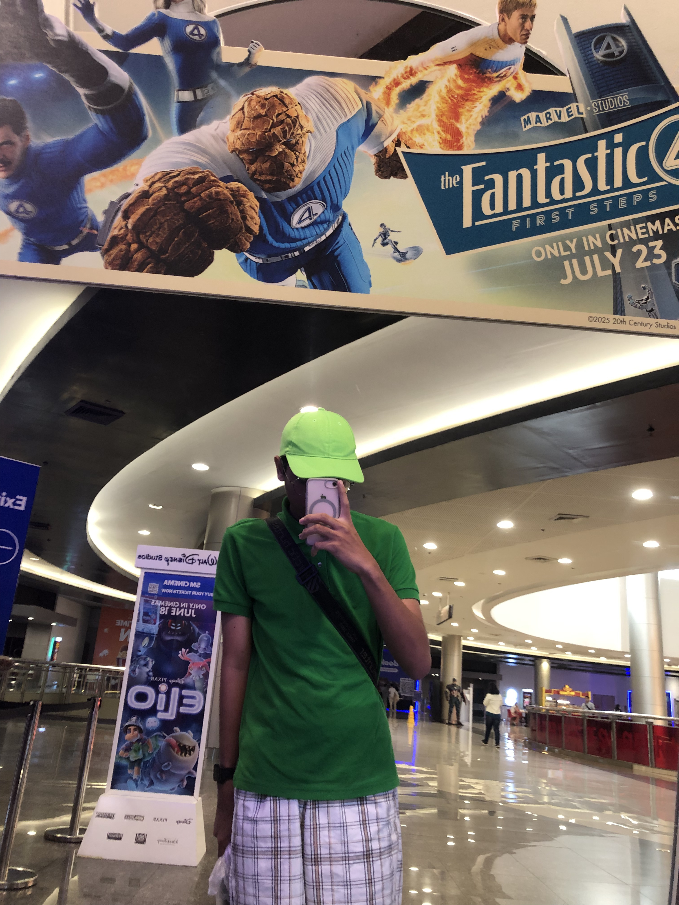
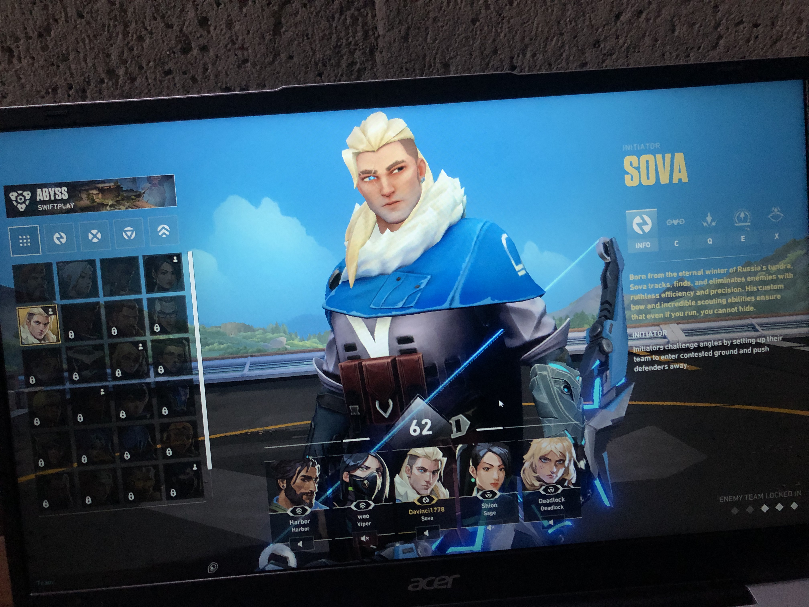
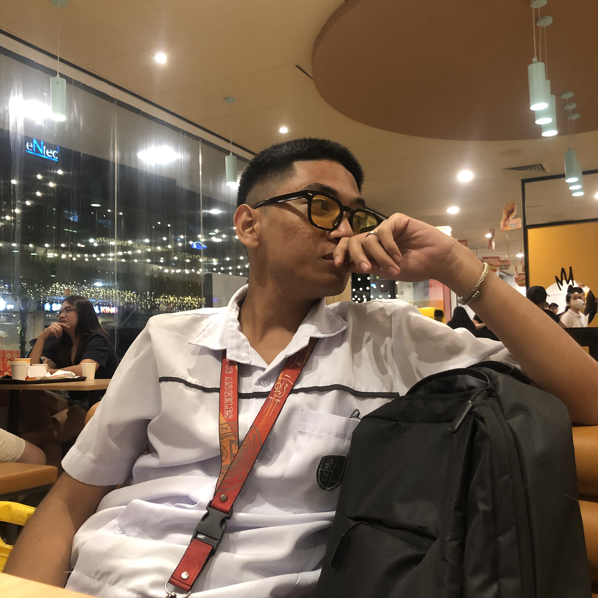
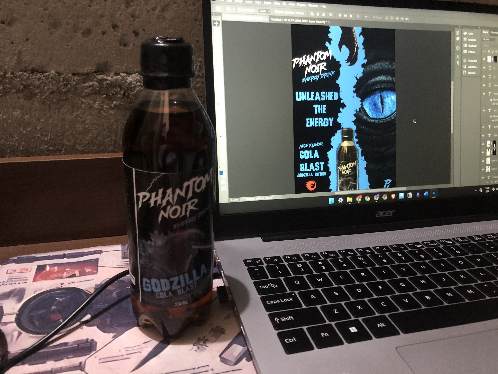
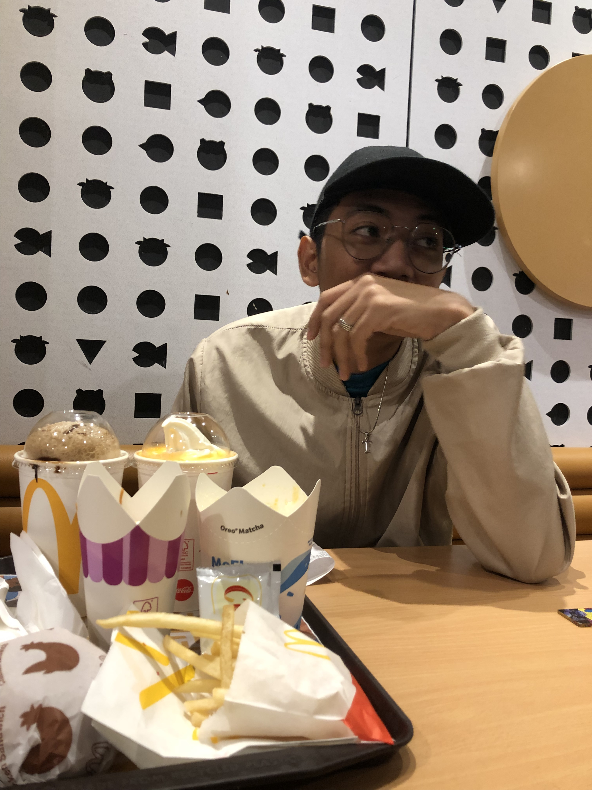
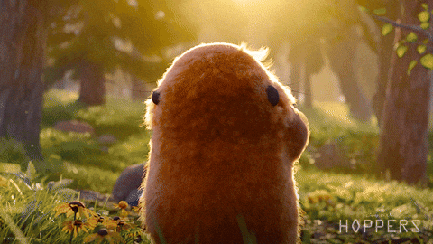

The Story of My Journey: Creativity, Imagination, and Technology
An Autobiography by Gabriel Bonito

Genesis
My name is Gabriel Bonito. I was born on November 4, 2005, and from a young age, I began to see life as something more complex than simply growing older year after year. Even as a child, I sensed that life was a journey filled with possibilities, challenges, lessons, and dreams waiting to be discovered. Every person has a story, and mine began like a blank space. At first, the canvas was empty, but slowly it started to fill with colors, experiences, and ideas that shaped who I am today. Each moment in my life whether joyful, challenging, or inspiring added another brushstroke to my artpiece. As I reflect on my life so far, I realize that the person I am today was shaped by curiosity, creativity, and a desire to understand the world around me. I have always been someone who asks questions, someone who wonders how things work and why people create the things they do. Growing up, I learned that identity is not something we are simply born with. It is something we build through experiences, passions, and the lessons we gather along the way. For me, those passions were creativity, storytelling, and technology.These interests did not appear all at once. Instead, they grew slowly over time, becoming stronger with each passing year. Each discovery opened a new door that led me closer to understanding who I wanted to become. Today, as a 20-year-old dreamer and lifelong learner, I see my life not as a finished story, but as a book that is still being written. Every new chapter brings new opportunities to grow, to learn, and to create something meaningful.

Discovering the Language of Art
One of the earliest passions I discovered in my life was art. When I was 5 years old, I found joy in drawing and creating things with my hands. At first, it was simply a fun activity, something that allowed me to pass time and express myself freely. But over time, I began to realize that art was much more than just drawing pictures. It became a way for me to communicate feelings and ideas that were sometimes difficult to explain through words. When I picked up a pencil or opened a digital drawing program, I felt as though my imagination had no limits. I could create characters, worlds, and scenes that existed only in my mind. Art gave me the freedom to explore creativity without restrictions. What fascinated me the most was the idea that a simple drawing could tell a story. A character’s expression, the colors of a background, or the details of a scene could communicate emotions and meaning. Art taught me that creativity is powerful. It showed me that ideas can be transformed into something visible and meaningful. It also taught me patience and dedication, because every drawing required practice and effort to improve. As I grew older, my interest in art expanded beyond traditional drawing. I became curious about digital design and multimedia creation. Technology opened new possibilities for creativity, allowing me to experiment with visuals in ways I had never imagined before. Through art, I began to understand something important about myself: I was someone who loved creating things.

The Power of Words and Storytelling
While art allowed me to express ideas visually, writing opened another door for creativity. I began writing poems and fictional stories as a way to explore thoughts and emotions more deeply. Poetry became a personal space for reflection. It allowed me to express feelings about life, dreams, struggles, and moments of inspiration. Sometimes a poem would begin with a single idea or emotion and grow into something meaningful. Writing fiction was different, but equally exciting. Through storytelling, I could build entire worlds and create characters who experienced adventures, challenges, and growth. Storytelling fascinated me because it allowed imagination to take shape in endless ways. A story could inspire people, make them reflect on their lives, or simply take them on a journey through imagination. The more I wrote, the more I realized that stories have power. They connect people, share experiences, and inspire new ideas. Many of the stories that inspired me came from movies, books, and other forms of media. These stories showed me how creativity could influence people around the world. I began to imagine how I could one day create stories that would inspire others as well.

Inspiration from Heroes
Another major influence in my life began when I was around six years old. That was the time I first became a fan of Marvel and DC. The world of superheroes captured my imagination immediately. These characters were not just powerful heroes fighting villains—they represented deeper values like courage, responsibility, and sacrifice. One hero who stood out to me the most was Spider-Man. His story felt different from many other heroes because he was an ordinary person who faced everyday struggles. Spider-Man taught me an important lesson: anyone can make a difference. His famous message about responsibility reminded me that our choices matter. Watching superhero stories over the years also introduced me to the idea of long-form storytelling. The interconnected stories of heroes, their struggles, and their victories showed how narratives could grow across multiple films and characters. One film that left a particularly strong impression on me was Avengers: Endgame. It was not just an action movie; it was the conclusion of years of storytelling. The film showed the importance of teamwork, perseverance, and sacrifice. The heroes faced failure and loss, but they continued to fight for something greater than themselves. These themes stayed with me and influenced how I think about determination and purpose.

The World of Video Games
When I was around twelve years old, another important discovery entered my life: video games. At first, I saw games simply as entertainment. They were fun, exciting, and immersive. But as I spent more time exploring different games, I began to see something deeper. Video games were not just games—they were complex works of art. They combined storytelling, music, design, animation, and programming into interactive experiences. Unlike movies or books, video games allowed players to participate in the story. The player could explore worlds, make decisions, and experience adventures directly. This realization sparked my curiosity. I began to wonder how these digital worlds were created. How were characters designed and animated? How were environments built? How did the code behind the scenes transform ideas into something playable? These questions made me interested in the technology behind games. Without realizing it at first, video games were introducing me to the world of computer science.

The Path of Computer Science
As I grew older, my curiosity about technology became stronger. Even though I have zero knowledge when it comes to programming, I wanted to understand how digital systems worked and how programmers created the software and experiences people use every day.This curiosity eventually led me to choose Computer Science as my field of study For me, this decision was not simply about choosing a career. It was about pursuing something I was passionate about., But sometimes, I want to give up on what I am pursuing right now. Computer science gave me a struggle, challenges and creativity at the same time to turn my ideas into reality through programming. Writing code felt similar to creating art or writing stories, but in a different form. Each program is like a structure built from logic and creativity. A developer takes an idea, breaks it down into steps, and turns those steps into working systems. What excited me the most was the realization that computer science and creativity could work together. Technology could bring creative ideas to life and that is my motivation.

Creativity and Technology
Some people see art and technology as completely different fields. But for me, they are deeply connected. Art is about imagination and expression, while technology provides the tools to bring those ideas into reality. Multimedia arts became the perfect place where these two worlds meet. It combines visuals, storytelling, sound, and digital tools to create meaningful experiences. This is why I see programming not just as a technical skill, but also as a creative one. Through technology, I can design systems, build digital experiences, and potentially create projects that inspire people. My dream is to create work that blends creativity and innovation.

As I continue my journey, I know that there is still much to learn. I want to continue improving my programming skills while also developing my abilities in art, storytelling, and multimedia creation. My goal is to create projects that are both technically strong and emotionally meaningful. I want to build things that inspire people, tell stories, and maybe even change lives in small ways. Of course, the path ahead will not always be easy. Challenges will appear, mistakes will happen, and learning will sometimes feel difficult. But I believe challenges are part of growth. Each problem solved becomes another lesson. Each mistake becomes another opportunity to improve.

LIFE GOES ON....
Today, I see myself as someone still at the beginning of a long journey. I am a creator at heart, a student of technology, and someone who believes strongly in the power of imagination. My experiences with art, writing, storytelling, movies, and video games have shaped who I am and guided the direction of my future. The story of my life is still being written, chapter by chapter. And as I move forward, I hope to continue creating, learning, and discovering new ways to combine creativity with technology. Because in the end, life truly is a canvas. And my story is only just beginning.
